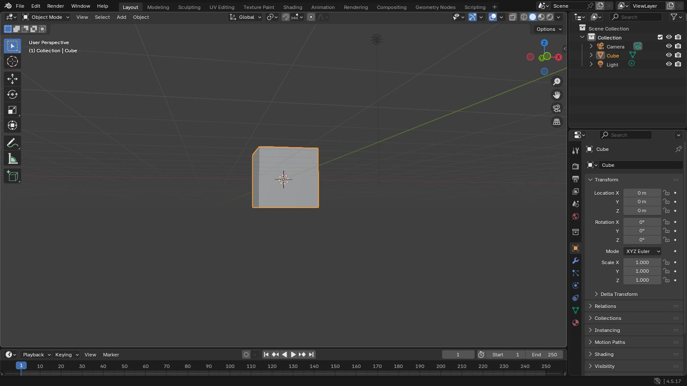
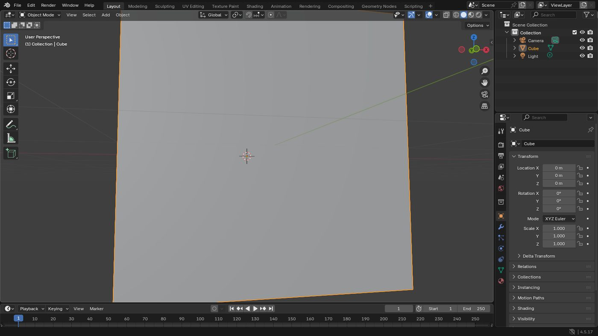

Lesson 1 of 6
The Interface and Moving Around the Scene
What you see when Blender opens, and how to move around the scene without getting lost.
This lesson and the five after it work on one project: a plant pot that we build step by step and render as a final image. Every screenshot on this site was taken from Blender 4.5 LTS while it was running. Shortcuts are the defaults. Every step in the six lessons was tried by hand with keyboard and mouse on Blender 4.5.17 LTS (adding the floor and light, the material, resolution, rendering, saving the image and the project), except Material Preview mode, which we have not tested.
The interface areas

- 3D Viewport: the large area where you see and work on the scene.
- Outliner: top right, a list of every object (Camera, Cube, Light).
- Properties: bottom right, with settings for the object, materials and rendering. The icons on its side are the tabs.
- Timeline: at the bottom, for animation. We do not need it in these lessons.
The default scene has a cube, a camera and a light. The cube is our starting point.
Moving around the scene
| Action | Shortcut / what it does |
|---|---|
| Middle mouse button + drag | Rotate around the scene (Orbit) |
| Shift + Middle mouse button + drag | Move the view sideways (Pan) |
| Mouse wheel | Zoom in and out |
| Numpad . | Focus on the selected object |
| Home | Show the whole scene |
| N | Show or hide the side panel |


Exercise
Orbit around the cube from every side, zoom in and out, press Numpad . to focus on it, then Home to see the whole scene again. If you ever lose the scene, that is always the fix.